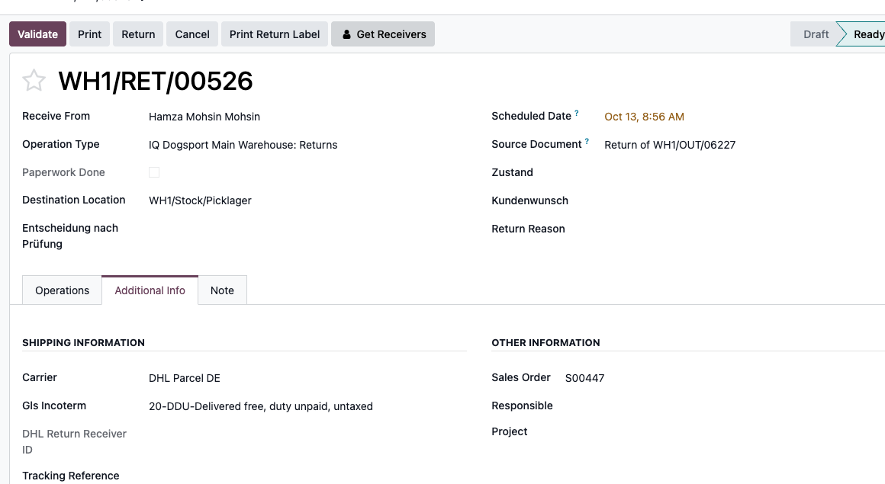
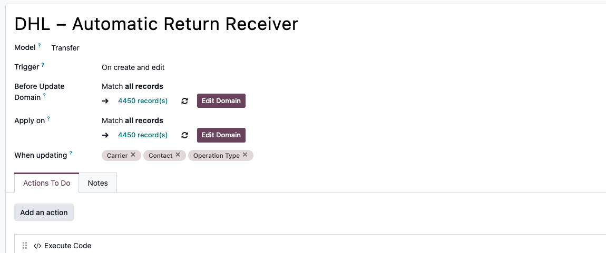
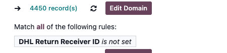
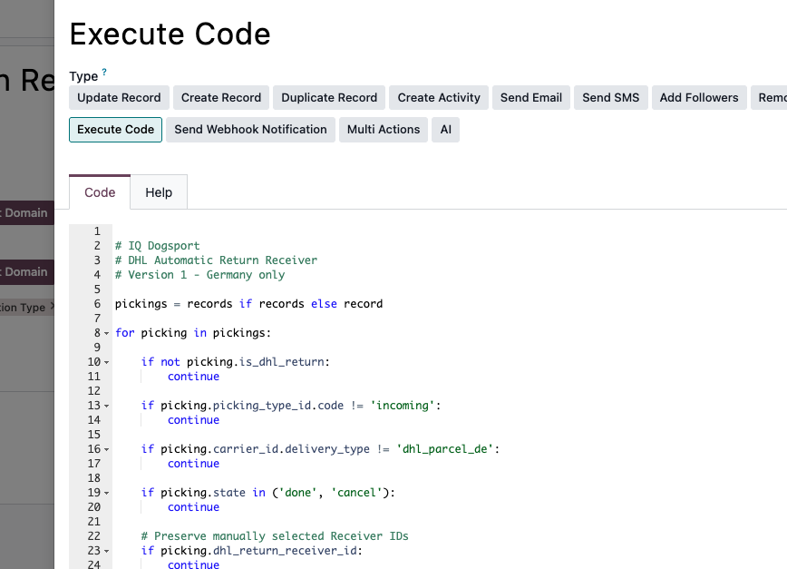
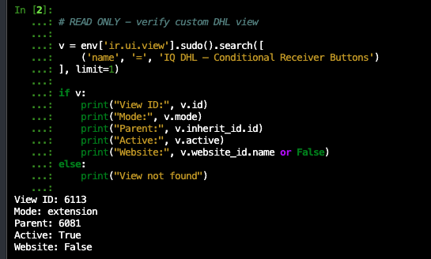
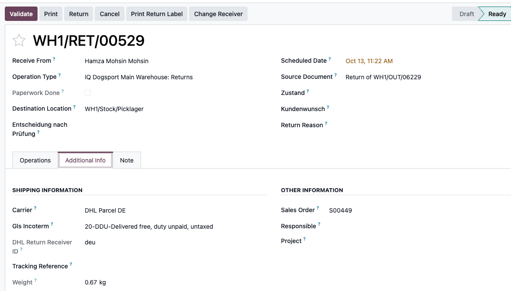
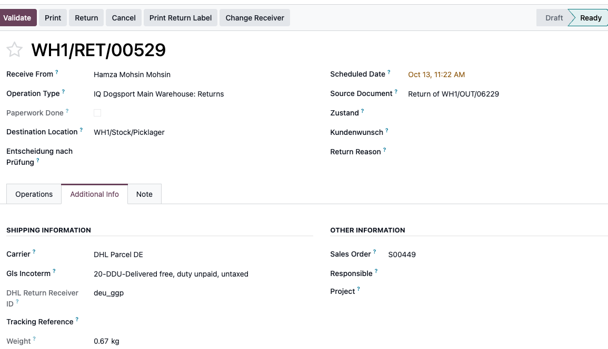
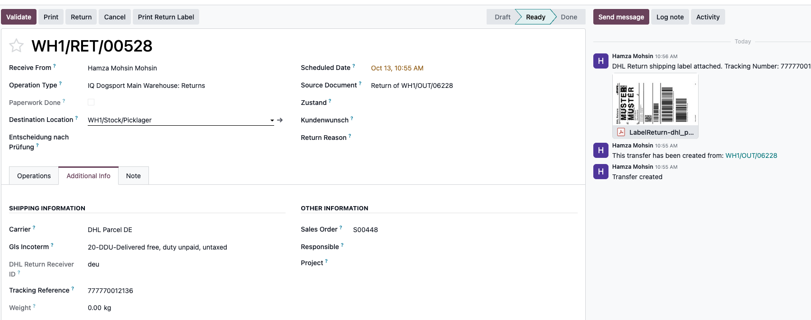

Every new DHL return had an empty DHL Return Receiver ID. Staff had to open Get Receivers, fetch choices, and select one manually. We wanted new German DHL returns to default to deu but still allow an override.

| Component | Name | Reason |
|---|---|---|
| One automation | DHL – Automatic Return Receiver (Staging rule 64) | Populate deu on eligible German DHL returns |
| One action | Execute Code | Check conditions and preserve manual receiver choices |
| One inherited view | IQ DHL – Conditional Receiver Buttons (Staging view 6113) | Switch button visibility |
| Existing BrowseInfo methods | Get Receivers / Print Return Label | Manual selection and API label generation; unchanged |
Previous rule “Auto Set Carrier” (ID 7) concerned GLS-versus-DHL carrier selection. It is not the Receiver ID automation.
Navigation: Settings → Technical → Automation → Automation Rules → DHL – Automatic Return Receiver.
| Field | Setting |
|---|---|
| Model | Transfer (stock.picking) |
| Trigger | On create and edit |
| Before Update Domain | Match all records |
| Apply on | [('dhl_return_receiver_id', '=', False)] |
| When updating | Carrier, Contact, Operation Type; do not include Receiver ID |
| Actions To Do | Execute Code |


Update Record alone would not express the checks for an incoming German DHL return and preserving manual changes. Execute Code writes the existing dhl_return_receiver_id only when it is empty.

# Model: stock.picking | Odoo Automated Action - Execute Code
pickings = records or record or env['stock.picking']
for picking in pickings:
if not picking.is_dhl_return:
continue
if picking.picking_type_id.code != 'incoming':
continue
if picking.carrier_id.delivery_type != 'dhl_parcel_de':
continue
if picking.state in ('done', 'cancel'):
continue
if picking.dhl_return_receiver_id:
continue # Preserve manual choices
if picking.partner_id.country_id.code == 'DE':
picking.write({'dhl_return_receiver_id': 'deu'})
log('DHL receiver deu assigned to %s' % picking.name, level='info')| Field | Value |
|---|---|
| View name | IQ DHL – Conditional Receiver Buttons |
| Model | stock.picking |
| Inheritance | Extension view |
| Inherited view | stock.picking.form.inherit.dhl (Staging parent ID 6081) |
| Website | Empty |
| Active | True |
<data>
<xpath expr="//button[@name='action_open_return_receiver_wizard']" position="attributes">
<attribute name="invisible">not is_dhl_return or state in ('done', 'cancel') or carrier_tracking_ref or dhl_return_receiver_id</attribute>
</xpath>
<xpath expr="//button[@name='action_open_return_receiver_wizard']" position="after">
<button name="action_open_return_receiver_wizard"
type="object" string="Change Receiver" class="btn-secondary"
invisible="not is_dhl_return or state in ('done', 'cancel') or carrier_tracking_ref or not dhl_return_receiver_id"/>
</xpath>
</data>The XML reuses action_open_return_receiver_wizard. The view does not print a label; it only controls whether Get Receivers or Change Receiver is shown.

| Situation | Selection button |
|---|---|
| No Receiver ID and no tracking | Get Receivers |
| Receiver ID assigned, no tracking | Change Receiver |
| Tracking assigned or transfer Done | Neither |



Print Return Label uses BrowseInfo and DHL. It is separate from the automation. Test labels are not valid customer labels.
Essential: Odoo.sh staging database changes do not automatically transfer to the production database. Copy the settings and XML manually or deploy using a version-controlled Odoo module.
| Item | Expected |
|---|---|
| Before label | Receiver deu populated, tracking empty, Change Receiver visible |
| Manual change | Chosen receiver retained |
| After label | Tracking set, receiver selection buttons hidden |
| Label address | Actual IQ Dogsport address, not DHL sandbox sample |